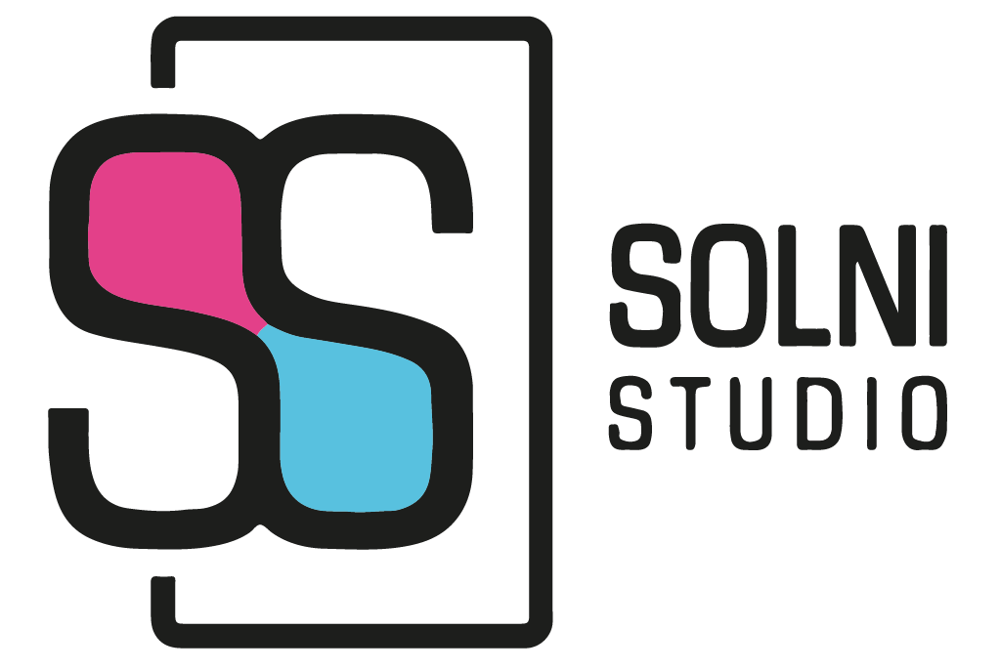

Me llamo Sofía Olivera Nicodella, tengo 23 años y soy estudiante avanzada de la Licenciatura en Diseño de Comunicación Visual que se dicta en la Facultad de Arquitectura, Diseño y Urbanismo perteneciente a la UdelaR.
Actualmente estoy realizando mi Tesis de grado y Proyecto final para dicha carrera.
Además, estoy cursando el curso de Desarrollo Web del programa Jóvenes a Programar de Ceibal.
Desde pequeña siempre me gustaron las actividades relacionadas al arte, principalmente aquellas relacionadas al diseño, siendo este uno de los principales motivos para elegir la orientación de mi educación y mi futuro profesional.
Dentro del arte, la danza y la música conforman un rol importante en mi vida, formando parte de la misma desde una temprana edad hasta la actualidad.
Por otro lado, y no menos importante, tengo un particular interés en las diferentes culturas y leguagues, lo que me ha llevado a querer aprender diferentes idiomas.
En el año 2017, aprobé ¨The Examination for the Certificate of Competency in English (ECCE)¨de la Universidad de Michigan.
En el año 2019, comencé a estudiar portugués y en el año 2022, comencé a estudiar francés y coreano.
Si estas interesado en contactarme, enviame un mensaje!
SOLNI nace ante la necesidad de crear mi propia identidad visual dentro del mundo del diseño.
Ests siglas parten de la conjunción entre mi nombre y mis apellidos, que son representativos de mi persona.